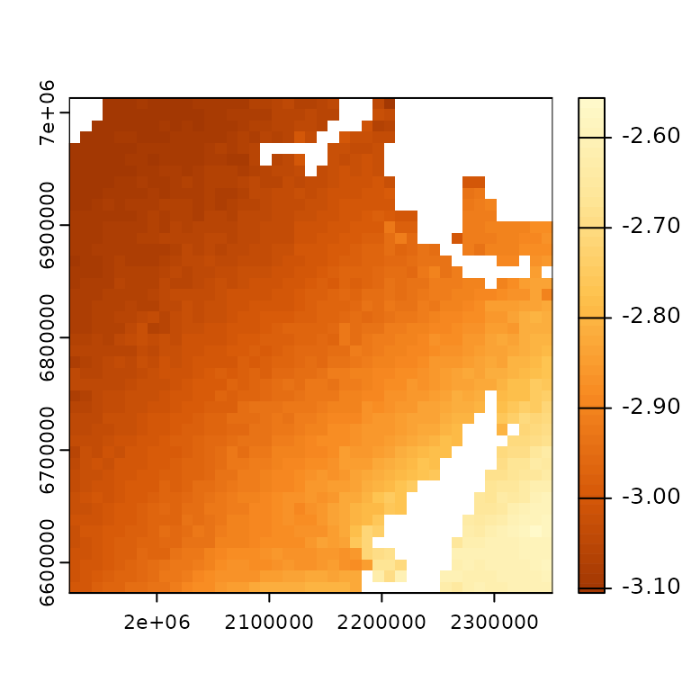
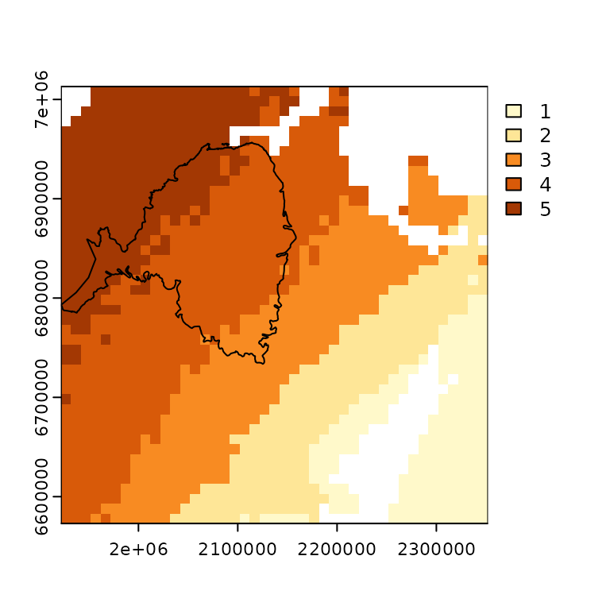

The ccviR package implements the NatureServe Climate Change Vulnerability Index (CCVI) in an R package and Shiny App. The package allows all of the geospatial aspects of calculating the CCVI to be done in R, removing the need for separate GIS calculations. It also enables easier sensitivity analysis of the Index.
The NatureServe CCVI is a trait based climate change vulnerability assessment framework that can also include observed and modeled responses to climate change. The NatureServe CCVI includes three commonly used components of vulnerability: exposure, sensitivity and adaptive capacity and optionally incorporates the results of documented or modeled responses to climate change. Exposure is assessed by determining the proportion of the species range that falls into 6 classes of temperature and moisture change, which is used to determine an exposure multiplier. Sensitivity and adaptive capacity and responses to climate change are assessed by scoring vulnerability factors (23 and 4 respectively), on a scale from ‘neutral’ (0) to ‘greatly increases vulnerability’ (3). Factors that cannot be answered can be left blank and contribute 0 to the total score, but if fewer than 13 are scored the index value can not be calculated. The sensitivity and adaptive capacity section scores are then multiplied by an exposure multiplier and summed, while the scores for the response to climate change section are simply summed. An index value is then determined for each section by applying a set of thresholds to the scores. The two index values are then combined using a table that gives more weight to the sensitivity and adaptive capacity section. The possible index values are Less Vulnerable, Moderately Vulnerable, Highly Vulnerable, Extremely Vulnerable or Insufficient Evidence if not enough factors of the CCVI are scored. For more detailed information on how the index works and how each factor is scored see the NatureServe CCVI Guidelines and the references below.
You can skip this step by using pre-prepared climate data available for download here
Step 1: Acquire climate data. We recommend the climate data for North America from AdaptWest but any data set that includes at least the mean annual temperature and climate moisture deficit (or a similar moisture metric) can be used. For AdaptWest select the bioclimatic variables for the normal period and the desired future climate scenario. We recommend using the 1961-1990 normal period and the ensemble data for SSP2-4.5 and SSP5-8.5 for the 2050s for the future. Save the downloaded data in a folder you can easily find.
Step 2: Prepare the climate data for use in the app. Climate data can be processed by providing file paths for each file or for a folder that contains all the files with standard names. For the output folder make sure to choose a location that is easy to find again because you will use the prepared climate data to calculate the index. When preparing data for multiple scenarios, you will need to process each scenario separately but save the thresholds used to classify the first scenario and supply them when processing subsequent scenarios.
Standard names for input folder
Accepted raster file types are “.asc”, “.tif”, “.nc”, “.grd” and “.img”
An example data set has been provided with the app that we will use in the examples below. The prepared data will be saved in the output folder and can be used whenever the index is being calculated so this step only needs to be completed once.
The thresholds for classifying data are based on those provided in the NatureServe Guidelines except for the thresholds used for the exposure data. Since we are using different climate data the thresholds for the classes need to be calculated. We use the the median and 1/2 the interquartile range since it is more appropriate for skewed data than the mean and standard deviation which are used by NatureServe for the continental US. To demonstrate how the data is prepared the maps below use the demo data set to show the change in mean annual temperature which is then classified into 6 categories.
library(ccviR)
library(sf)
#> Linking to GEOS 3.10.2, GDAL 3.4.1, PROJ 8.2.1; sf_use_s2() is TRUE
library(dplyr)
#>
#> Attaching package: 'dplyr'
#> The following objects are masked from 'package:stats':
#>
#> filter, lag
#> The following objects are masked from 'package:base':
#>
#> intersect, setdiff, setequal, union
data_pth <- system.file("extdata", package = "ccviR")
# check file names
list.files(file.path(data_pth, "clim_files/raw"))
#> [1] "NB_norm_CMD.tif" "NB_norm_MAP.tif" "NB_norm_MAT.tif"
#> [4] "NB_norm_MCMT.tif" "NB_norm_MWMT.tif" "NB_RCP.4.5_CMD.tif"
#> [7] "NB_RCP.4.5_MAT.tif" "NB_RCP.8.5_CMD.tif" "NB_RCP.8.5_MAT.tif"
# prepare the data and save it in out_folder
# RCP4.5
brks <- prep_clim_data(
mat_norm = file.path(data_pth, "clim_files/raw", "NB_norm_MAT.tif"),
mat_fut = file.path(data_pth, "clim_files/raw", "NB_RCP.4.5_MAT.tif"),
cmd_norm = file.path(data_pth, "clim_files/raw", "NB_norm_CMD.tif"),
cmd_fut = file.path(data_pth, "clim_files/raw", "NB_RCP.4.5_CMD.tif"),
map = file.path(data_pth, "clim_files/raw", "NB_norm_MAP.tif"),
mwmt = file.path(data_pth, "clim_files/raw", "NB_norm_MWMT.tif"),
mcmt = file.path(data_pth, "clim_files/raw", "NB_norm_MCMT.tif"),
clim_poly = file.path(data_pth, "clim_files/processed", "clim_poly.shp"),
out_folder = file.path(data_pth, "clim_files/processed"),
overwrite = TRUE,
scenario_name = "RCP 4.5",
)
#> processing MAT
#> processing CMD
#> processing MAP
#> processing MWMT and MCMT
#> finished processing
#RCP8.4 using breaks from 4.5 map, mwmt and mcmt only need to be processed once
prep_clim_data(
mat_norm = file.path(data_pth, "clim_files/raw", "NB_norm_MAT.tif"),
mat_fut = file.path(data_pth, "clim_files/raw", "NB_RCP.8.5_MAT.tif"),
cmd_norm = file.path(data_pth, "clim_files/raw", "NB_norm_CMD.tif"),
cmd_fut = file.path(data_pth, "clim_files/raw", "NB_RCP.8.5_CMD.tif"),
out_folder = file.path(data_pth, "clim_files/processed"),
clim_poly = file.path(system.file("extdata", package = "ccviR"),
"assess_poly.shp"),
overwrite = TRUE,
scenario_name = "RCP 8.5",
brks_mat = brks$brks_mat,
brks_cmd = brks$brks_cmd,
brks_ccei = brks$brks_ccei
)
#> processing MAT
#> processing CMD
#> finished processingIt is recommended to store readme file with the climate data to record where the data came from and any relevant metadata. This file is required if the data is used with the ccviR Shiny app.
# make readme csv
write.csv(
data.frame(Scenario_Name = c("RCP 4.5", "RCP 8.5"),
GCM_or_Ensemble_name = "AdaptWest 15 CMIP5 AOGCM Ensemble",
Historical_normal_period = "1961-1990",
Future_period = "2050s",
Emissions_scenario = c("RCP 4.5", "RCP8.5"),
Link_to_source = "https://adaptwest.databasin.org/pages/adaptwest-climatena-cmip5/"),
file.path(data_pth, "clim_files/processed/", "climate_data_readme.csv"),
row.names = FALSE
)Below is an example of how the MAT is classified by
prep_clim_data. The change in MAT (normal - future) is
classified into classes 1-6 where class 6 has the largest increase in
temperature. The thresholds or breaks between classes are determined by
the median and 1/2 the interquaritle range.
mat_norm <- terra::rast(file.path(data_pth, "clim_files/raw/NB_norm_MAT.tif"))
mat_fut <- terra::rast(file.path(data_pth, "clim_files/raw/NB_RCP.4.5_MAT.tif"))
mat_classified <- terra::rast(file.path(data_pth, "clim_files/processed/MAT_reclassRCP_4.5.tif"))
brks$brks_mat
#> [,1] [,2] [,3]
#> [1,] -4.105 -3.130 6
#> [2,] -3.130 -3.050 5
#> [3,] -3.050 -2.970 4
#> [4,] -2.970 -2.890 3
#> [5,] -2.890 -2.810 2
#> [6,] -2.810 -1.556 1
pal = c("#FFF9CA", "#FEE697", "#FEC24D", "#F88B22", "#D85A09", "#A33803")
terra::plot(mat_norm - mat_fut,
col = colorRampPalette(rev(pal))(50))
terra::plot(mat_classified, col = pal)The following spatial data sets can be used for each species:
For this example all of the data is provided with the package.
rng_poly <- read_sf(file.path(data_pth, "rng_poly.shp"), agr = "constant")
assess_poly <- read_sf(file.path(data_pth, "assess_poly.shp"), agr = "constant")
rng_chg <- terra::rast(c(file.path(data_pth, "rng_chg_45.tif"),
file.path(data_pth, "rng_chg_85.tif")))
PTN_poly <- read_sf(file.path(data_pth, "PTN_poly.shp"), agr = "constant")
# the range change raster has values from -1, 0 and 1, this matrix is used to
# convert them to the 4 classes described above.
hs_rcl_mat <- matrix(c(-1:1, c(1, 2, 3)), ncol = 2)Next we will load in the climate data that we prepared in the first
step using the get_clim_vars() function which loads the
data and stores it in a list with the required names. The scenario names
must match the suffix on the file name which is done automatically by
prep_clim_data. The result is a list where each element is
a RasterLayer for static variables and a RasterStack for variables that
change with one layer per scenario. The clim_poly is also included as an
sf object.
clim_dat <- get_clim_vars(file.path(data_pth, "clim_files/processed"),
scenario_names = c("RCP 4.5", "RCP 8.5"))
str(clim_dat, max.level = 1)
#> List of 6
#> $ mat :S4 class 'SpatRaster' [package "terra"]
#> $ cmd :S4 class 'SpatRaster' [package "terra"]
#> $ map :S4 class 'SpatRaster' [package "terra"]
#> $ ccei : NULL
#> $ htn :S4 class 'SpatRaster' [package "terra"]
#> $ clim_poly:Classes 'sf' and 'data.frame': 1 obs. of 11 variables:
#> ..- attr(*, "sf_column")= chr "geometry"
#> ..- attr(*, "agr")= Factor w/ 3 levels "constant","aggregate",..: 1 1 1 1 1 1 1 1 1 1
#> .. ..- attr(*, "names")= chr [1:10] "GID_0" "NAME_0" "GID_1" "NAME_1" ...Then we can run the spatial data analysis using the species specific
data and climate data. The resulting object is a list containing a table
with the results of the spatial analysis,
spat_res$spat_table, and two range polygons which are
provided for mapping. spat_res$range_poly_assess the range
polygon clipped to the assessment area, and
spat_res$range_poly_clim the range polygon clipped to the
extent of the climate data. The first is used for all factors except the
historical thermal and hydrological niche which use the range clipped to
the extent of the climate data because historical thermal and
hydrological niche are used a proxies for the range of temperature and
moisture conditions that the species can tolerate and therefore should
reflect as much of the range as possible. If the range_poly provided is
completely within the assessment area then these two polygons will be
the same
spat_res <- analyze_spatial(range_poly = rng_poly, scale_poly = assess_poly,
clim_vars_lst = clim_dat, ptn_poly = PTN_poly,
hs_rast = rng_chg, hs_rcl = hs_rcl_mat,
scenario_names = c("RCP 4.5", "RCP 8.5"))
#> performing spatial analysisWe can look at how the spatial analysis was done for the RCP 4.5 scenario by plotting the appropriate range polygon and climate data to see how they overlap.
terra::plot(clim_dat$mat$RCP_4.5, col = pal)
plot(st_geometry(spat_res$range_poly_assess), add = TRUE)
And then inspecting the spatial results table. In this case it shows that the range is spread over the 2nd, 3rd and 4th highest exposure classes for change in MAT.
spat_res$spat_table[, 1:7]
#> scenario_name MAT_1 MAT_2 MAT_3 MAT_4 MAT_5 MAT_6
#> 1 RCP 4.5 0 0 8.067 64.113 27.82 0
#> 2 RCP 8.5 0 0 0.000 0.000 0.00 100make_vuln_df() creates a blank table that can be filled
in with scores for each vulnerability factor used to calculate the
index. The vulnerability factors and how to score them is explained in
the NatureServe Guidelines. The table includes an abbreviated version of
the question, the maximum value for each factor and whether the factor
is calculated by the spatial data analysis and should be scored as -1 so
as not to override the results of the spatial analysis.
Value1 should be filled with a number between -1 and the
maximum value for that question (2 or 3) which correspond to the
following impacts on vulnerability -1: Unknown, 0: Neutral, 1: Somewhat
Increase, 2: Increase, 3: Greatly Increase. If you wish to choose two or
more answers to reflect uncertainty you can fill in Value2
- Value4 as well.
vuln <- make_vuln_df("sp_name")
if(FALSE){
# you can interactively edit the table
vuln <- edit(vuln)
# # Another option:
#
# # save the table as a csv
#
# write.csv(vuln, "path/to/write", row.names = FALSE)
#
# # Edit the csv, save it and load it back in to R
# vuln <- read.csv("path/to/write", stringsAsFactors = FALSE)
} else {
# or use code (recommended for reproducibility)
vuln$Value1[3:19] <- c( 0,0,1,0, -1, -1, -1, -1, 0, 0, 1, 0, 0, 1, 0, 0, 0)
vuln$Value1[26:29] <- c(0, -1, -1, 0)
# include a second value to reflect uncertainty and trigger a monte carlo to
# determine confidence
vuln$Value2[3:5] <- c(2, 0, 0)
}Finally, use the results of the spatial analysis and the answers to the vulnerability questions to calculate the index. For the example I have reduced the number of rounds in the Monte Carlo but it should generally be kept to the default.
index_res <- calc_vulnerability(spat_res$spat_table, vuln, tax_grp = "Bird",
n_rnds = 10)
#> calculating vulnerability index RCP 4.5
#> performing monte carlo
#> finished vulnerability
#> calculating vulnerability index RCP 8.5
#> performing monte carlo
#> finished vulnerabilityThe result is a dataframe with 12 columns see
?calc_vulnerability for an explanation of all of them.
index_res$index gives the index where EV: Extremely
Vulnerable, HV: Highly Vulnerable, MV: Moderately Vulnerable, LV: Less
Vulnerable, and IE: Insufficient Evidence. Below we see that our example
species is Highly Vulnerable to climate change
glimpse(index_res)
#> Rows: 2
#> Columns: 12
#> $ scenario_name <chr> "RCP 4.5", "RCP 8.5"
#> $ index <chr> "HV", "EV"
#> $ conf_index <chr> "Low", "Very High"
#> $ mc_results <list> [<tbl_df[10 x 5]>], [<tbl_df[10 x 5]>]
#> $ mig_exp <chr> "N/A", "N/A"
#> $ d_score <dbl> 4, 4
#> $ b_c_score <dbl> 9.45, 12.05
#> $ vuln_df <list> [<tbl_df[29 x 12]>], [<tbl_df[29 x 12]>]
#> $ n_b_factors <int> 4, 4
#> $ n_c_factors <int> 11, 11
#> $ n_d_factors <int> 4, 4
#> $ slr_vuln <lgl> FALSE, FALSE
index_res$index
#> [1] "HV" "EV"These results can be used to investigate how the index value was reached including using two graphs that are included in the package. The first shows how the index values, that are calculated separately for the modeled response to climate change and sensitivity and adaptive capacity modified by exposure sections, are combined into the overall index value. It also shows where the thresholds are for converting the numerical scores from each factor into the categorical index value. In our example we can see that the index value is driven primarily by the sensitivity section since the score in that section would have produced an index value of Extremely Vulnerable if the D score were higher or not included (-1 in the graph).
# set theme
my_theme <- ggplot2::theme_classic() +
ggplot2::theme(text = ggplot2::element_text(size = 12),
strip.background = ggplot2::element_blank())
ggplot2::theme_set(my_theme)
plot_score_index(index_res)The second graph is a plotly graph of the scores for each factor . The bars show the total score for the factor and the popup shows the exposure multiplier that was used to modify the score for the vulnerability factor as well as the name of the question.
q_score <- bind_rows(index_res$vuln_df %>% `names<-`(index_res$scenario_name),
.id = "scenario_name") %>%
plot_q_score()
q_score